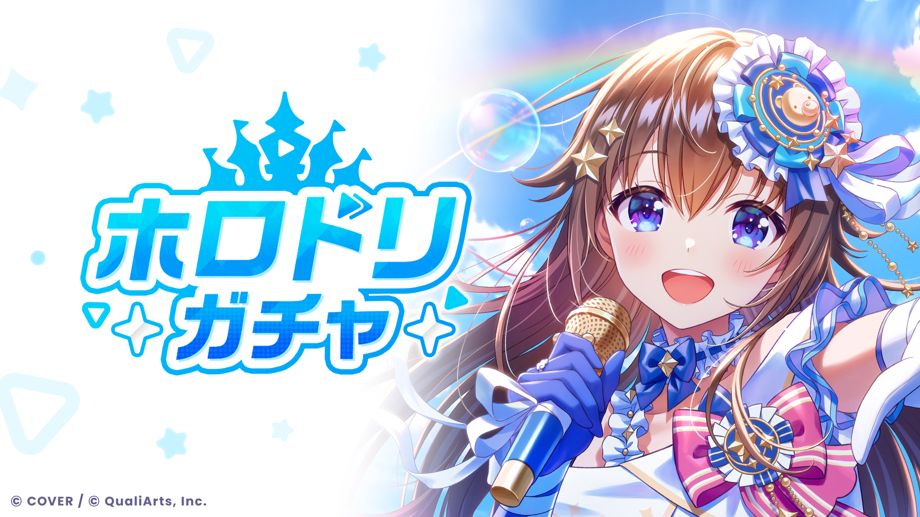

総勢54名のホロメンが登場する「ホロドリガチャ」が開催！
◆開催期間
サービス開始〜
ホロステッカーについて
「ホロステッカー」は、開花段階が最大の★3、★4メンバーを新たに獲得した場合に入手することができます。
また、所持しているガチャPtを有効期限までに使用しなかった場合も「ホロステッカー」に交換されます。
「ホロステッカー」は［ショップ］→［ホロステッカー交換］で様々なアイテムと交換することができます。
詳細は［ヘルプ］→［ショップ］→［ホロステッカー交換について］をご確認ください。
特別ホロステッカーについて
「特別ホロステッカー」は★5メンバーを獲得した場合に入手することができます。
また、開花段階が最大の★5メンバーを獲得した場合には、より多くの「特別ホロステッカー」を獲得することができます。
「特別ホロステッカー」は［ショップ］→［特別ホロステッカー交換］で様々なアイテムと交換することができます。
詳細は［ヘルプ］→［ショップ］→［特別ホロステッカー交換について］をご確認ください。
注意事項
・開催期間および内容は、予告なく変更する場合があります。
・本ガチャに関する注意事項に関しましては、各ガチャの［ガチャ画面］→［ガチャ詳細］→［注意事項］をご確認ください。
・本ガチャの提供内容に関しましては、各ガチャの［ガチャ画面］→［ガチャ詳細］→［提供割合］をご確認ください。